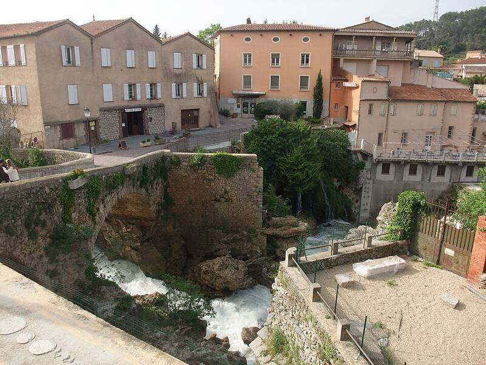

Trans-en-Provence case
Var, France, 1981

On January 8, 1981, farmer Renato Nicolaï said a saucer-shaped object about 2.5 meters across landed briefly on his land, leaving burn marks. France's official UFO office, GEPAN, reported that the soil had been compressed and heated and that nearby alfalfa had lost chlorophyll, and found no explanation. Skeptics note the gendarmes thought the marks looked like tire tracks, and that vehicles used the spot. 1
Open in the interactive Watcher
Sources
- Trans-en-Provence case Wikipedia